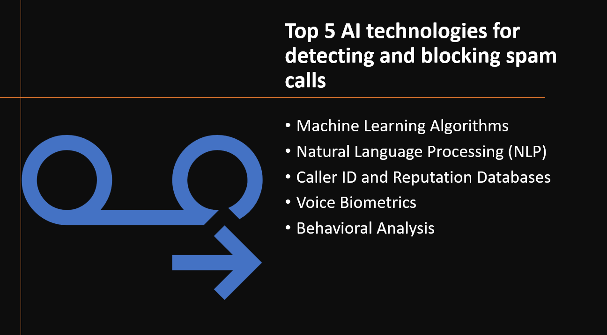

Introduction
With the rise of telecommunication technologies, the nuisance of spam calls has become a prevalent issue for phone users worldwide. AI technologies have emerged as powerful tools to combat this problem by efficiently detecting and blocking spam calls. In this blog post, we will explore the top five AI technologies for detecting and blocking spam calls, empowering phone users to have a safer and more pleasant calling experience.
Why use AI technologies for detecting and blocking spam calls?
- AI technologies accurately identify spam calls by analyzing call patterns and content.
- AI-powered systems can block spam calls in real-time, preventing users from engaging with fraudulent calls.
- AI can handle a large volume of calls, making it suitable for high call traffic scenarios.
- AI systems adapt to evolving spam tactics, ensuring up-to-date and effective detection.
- AI-driven spam call blocking improves user experience by reducing disruptions and protecting against scams.
Here's Our Top 5 AI technologies for detecting and blocking spam calls:
1: Machine Learning Algorithms
Overview and Importance
Machine learning algorithms play a crucial role in detecting and blocking spam calls by analyzing call patterns, audio content, and caller behavior. These algorithms are an essential component of AI technologies designed to enhance call security and protect users from fraudulent and unwanted phone calls.
Key Features and Capabilities
Call Pattern Recognition
- Machine learning algorithms can identify and learn from call patterns associated with spam calls, such as repeated calls from the same number within a short timeframe or calls with specific call durations.
Audio Content Analysis
- By analyzing the audio content of calls, these algorithms can detect common spam call characteristics, such as pre-recorded messages or robotic voices.
Caller Behavior Analysis
- Machine learning algorithms can profile caller behavior, identifying suspicious behavior like making multiple calls to different numbers within a short period or using caller ID spoofing techniques.
2: Natural Language Processing (NLP)
Overview and Importance
Natural Language Processing (NLP) is vital in the context of detecting and blocking spam calls as it enables the analysis of spoken or transcribed text from the calls. NLP algorithms can extract relevant information, identify spam-related keywords, and interpret caller intent to flag potentially fraudulent or malicious calls accurately.
Key Features and Capabilities
Text Parsing and Analysis
- NLP techniques can parse and analyze the text from call transcriptions or voice-to-text conversions to extract meaningful information.
Sentiment Analysis
- NLP can determine the sentiment of the call content, distinguishing between legitimate calls and spam messages that evoke negative sentiments or urgency.
Keyword Detection
- NLP algorithms can identify specific keywords or phrases commonly associated with spam calls, enhancing the accuracy of spam call identification.
3: Caller ID and Reputation Databases
Overview and Importance
Caller ID and reputation databases play a crucial role in detecting and blocking spam calls by providing information about the caller's identity and reputation. These databases store historical data on phone numbers associated with spam activities, enabling AI systems to make informed decisions in real-time when an incoming call is received.
Key Features and Capabilities
Caller Identification
- Caller ID databases provide information about the caller's phone number and, in some cases, additional details like the caller's name or location.
Reputation Scoring
- These databases assign reputation scores to phone numbers based on their historical behavior, indicating the likelihood of the call being spam.
Real-Time Lookup
- AI systems can perform real-time lookups in reputation databases during incoming calls to determine if the caller's number has a negative history, helping to block potential spam calls.
4: Voice Biometrics
Overview and Importance
Voice biometrics is a powerful AI technology used for detecting and blocking spam calls by analyzing the unique characteristics of a caller's voice. It can verify the caller's identity and distinguish between legitimate callers and spam callers based on their voiceprints, enhancing the accuracy of spam call detection.
Key Features and Capabilities
Voiceprint Creation
- Voice biometrics systems create voiceprints by analyzing various voice features, such as pitch, tone, and speech patterns, to uniquely identify each caller.
Voice Authentication
- By comparing incoming calls with previously enrolled voiceprints, voice biometrics can authenticate legitimate callers and block fraudulent ones.
Anti-Spoofing Measures
- Advanced voice biometrics solutions incorporate anti-spoofing measures to detect and prevent attackers from using recorded or synthetic voices to bypass the system.
5: Behavioral Analysis
Overview and Importance
Behavioral analysis is a significant AI technology used for detecting and blocking spam calls by examining caller behavior patterns. It focuses on identifying anomalies and unusual calling behavior, helping to differentiate legitimate callers from spammers and scammers.
Key Features and Capabilities
Call Frequency Analysis
- Behavioral analysis algorithms monitor the frequency of calls from a specific number to identify suspicious calling patterns associated with spam or robocalls.
Call Duration and Timing
- Analyzing call duration and timing helps identify typical spam call characteristics, such as short-duration calls or calls made during odd hours.
Call Content Analysis
- By analyzing the content of the calls, behavioral analysis systems can detect common spam phrases or keywords, enabling effective spam call blocking.
Conclusion
AI technologies are highly significant in efficiently detecting and blocking spam calls, ensuring a safer calling experience for users. The top five technologies, including machine learning algorithms, natural language processing, caller ID and reputation databases, voice biometrics, and behavioral analysis, offer advanced capabilities for accurate spam call identification. By using these AI technologies, instances of spam calls are reduced, improving call safety and instilling trust in phone users. Integrating these AI technologies in phone networks and applications is essential to combat spam calls effectively and provide users with a hassle-free calling experience. AI-driven spam call detection plays a crucial role in creating a spam-free calling environment, benefiting both users and the telecommunications industry.